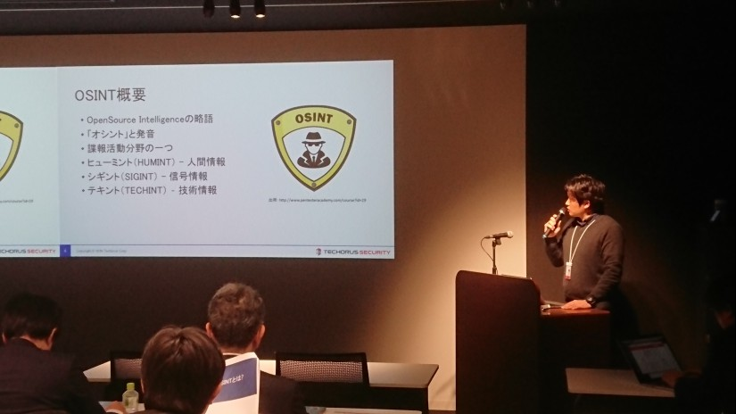

문재웅 포트폴리오
Table of Contents
1 소개
일본에 거주하고 있는 한국인 프로그래머, 보안 연구가.
자바 개발자로 시작해서 현재는 보안 진단 업무에 전념하고 있다.
언젠가는 본인 이름으로 책도 내보고 싶어 한다.
1.1 기술블로그 주소(한국어)
1.2 기술문서 저장소(한국어)
https://github.com/JaewoongMoon/my-orgs
기술문서 저장소 대문에 인덱스를 만들어 두자.
1.3 관심있는 것들
- 어플리케이션 해킹 (Web/Mobile)
- 각종 취약점, 버그레포트 연구
- 보안 진단 툴 개발
- 암호
- 이맥스
- 클로저
- Docker
2 진단 툴 개발 프로젝트
| 순번 | 이름 | 소스코드 | 설명 |
|---|---|---|---|
| 1 | Davis | 비공개 | 진단 레포트 자동생성 |
| 2 | Katana | https://github.com/JaewoongMoon/katana | 블라인드 SQL 인젝션 자동화 툴(진단용) |
| 3 | Fuzz | https://github.com/JaewoongMoon/fuzz | 웹 파라메터에 공격 페이로드 세팅(진단용) |
3 보안 세미나 / 연구자료
| 년도 | 월 | 이름 | URL | 비고 |
|---|---|---|---|---|
| 2018 | 3 | 블라인드 SQL 인젝션 실습 및 자동화 툴 소개 | ||
| 2018 | 2 | 워드프레스 DOS 공격 원리 및 방어방법 | https://github.com/JaewoongMoon/my-orgs/tree/master/cve/cve-2018-6389%20(wordpress%20dos) | cve-2018-6389 |
| 2018 | 1 | CPU Gate(meltdown) 원리 및 위험성 연구 | https://github.com/JaewoongMoon/my-orgs/blob/master/cve/cve-2017-5754%20(meltdown)/meltdown-summary-jp.org | cve-2017-5754 |
| 2017 | 12 | OSINT를 이용한 정보수집 기술 | 말테고, Shodan, 구글 연산자 검색 등을 활용한 정보 수집 기술 | |
| 2017 | 6 | XXE 인젝션- XML을 이용한 공격 및 방어방법에 대해서 | cve-2015-5161 함께 소개 | |
| 2016 | 12 | CTF 소개 및 문제 풀이 실습 |

4 대외 활동
| 년도 | 월 | 분류 | 내용 | 비고 |
|---|---|---|---|---|
| 2018 | 1 | 번역 | セキュリティコンテストのためのCTF問題集 웹 문제 파트 번역 | SECCON実行委員会 |
| 2017 | 3 | CTF참가 | 0CTF 2017 참가 | |
| 2016 | 12 | CTF참가 | SECCON 2016 参加 | |
| 2016 | 11 | CTF참가 | Hack the vote 2016 참가 | |
| 2016 | 6 | CTF참가 | SECCON CTF for beginners 参加 |